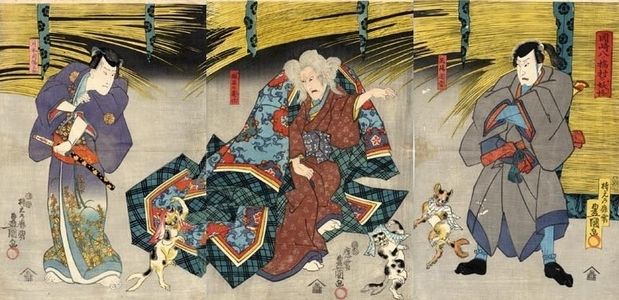
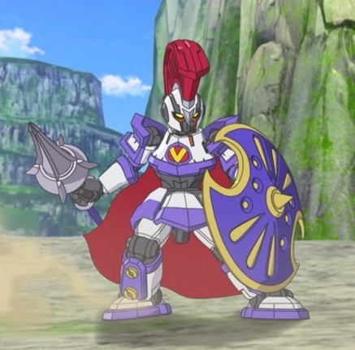
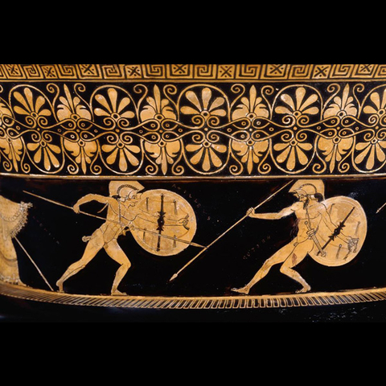

Level-5 Inc. a well know Japanese gaming company, has made wide array of games since the 6th generation of consoles. Akihiro Hino is the founder and President of this company. Games from action adventure to puzzle adventure make up their library. Dark Cloud though not the companies debut game, it put them on the map as it had a striking resemblance to the “Legend of Zelda Series” (Zdyrko). Since then, this company has become more popular and has formed partnerships with other companies. Even though Level-5 Inc. popularity led to success, it did not make the company stagnant. “In October 2015 Level-5 Inc. create a sub company call Level-5 Abby Inc.; their goal is to bring the best of Japanese children’s entertainment to the global market and across all platforms and devices” (Kelsch). With the creation of Level-5 Abby Inc. this company could focus on making family-oriented games that introduce various cultures globally though, Japanese is often the focus. Two of the games this company “has made is Yo-Kai Watch and LBX Little Battlers eXperience” (Hino and Hayakawa). With these video games a few cultures are expressed. Yo-kai Watch a modern-day video game takes a satiric approach to Japanese mythology. Companies like “Disney XD, Viz Media, Nintendo, and Hasbro are partners with Yo-Kai Watch Level-5 Abby Inc as depicted in this image” (Hino and Hayakawa).
Yo kai Watch Partners-Image prodived by Akihiro Hino and Karen Strickholm
URL: http://www.retail-merchandiser.com/reports/licensing-reports/3077-level-5-abby-inc.
In the traditional folklore “Yokais are strange and supernatural creatures that can be attractive, bewitching, destructive, mysterious and wonderous” (Meyer). Due to these multiple natures, it is difficult to discern a Yokais intentions. Yet, that is the role of the main protagonist Nate must contend with by solving problems and fighting (Hino). Yo-Kai from Yo-kai Watch has also taken inspiration from folklore and real-life events. Though not all of the characters have a pleasant story. For instants, Akihiro Hino was inspired to create Jibanyan’s after witnessing a tragic event when he was young; a stray cat he wished to take home but did not was run over is the catalytic backstory for this character (Halliday). Jibanyan became Yo-kai Watch’s mascot due to his popularity. Though his behavior is significantly different from the traditional nekomata. “Nekomata are two tail cat that terrorize humans and start fires”, were as in the game Jibanyan though, has two flame tail he befriends a human (Meyer). This deviate from the tradition folktale in almost every way except appearance. Below is an image of a Nekomata and Jibanyan.

Nekomata painting From the Edo period 1603-1867- Artist- Utagawa Kunisada- Image prodived by Horst Gräbner
https://commons.wikimedia.org/wiki/File:Kunisada-Nekomata-1847-01.jpg
Yo Kai Watch Jibanyan-Artist-Akihiro Hino-Image prodived by Akihiro Hino
URL: https://play.nintendo.com/themes/friends/jibanyan/
Though this stray from the mythology it still fulfills the goal of sharing Japanese culture globally by being allied with several companies. LBX Little Battlers eXperience an action role playing game for the Nintendo DS also fall into the genres as well. LBX takes place in a world where “children use miniature robots they have purchased in competitive battles” (Espineli). This game shares culture by means of the tool the character use to do battle. For instance, Achilles, “a Homeric character from Greek mythology” share a resemblance to the LBX automaton (Homer). As seen below, though the warrior of The Iliad is not mechanical the helmet, armor, shield, and spear are quite similar to the LBX counterpart.

Meet LBX Achilles-Artist-Atsuhiro Tomioka-Image provided by Sprukits
URL: https://www.youtube.com/watch?v=QGRr0Ion-oQ

Achilles Kills Hector-Artist-Unknown-Image prodived by Barry B. Powell
URL: https://blog.oup.com/2013/12/scenes-from-the-iliad-in-ancient-greek-art/
Like Yo-kai Watch, LBX Little Battlers eXperience takes a famous figure or mythical character and focuses on the appearance to introduce the culture to children. Though Level-5 Abby Inc. is only introducing children to a small piece of these cultures’ curiosity will compel them to learn more.
References
Espineli, Matt. “LBX: Little Battlers EXperience Review.” GameSpot, GameSpot, 17 Sept. 2015, https://www.gamespot.com/reviews/lbx-little-battlers-experience-review/1900-6416226/.
Espineli, Matt. “LBX: Little Battlers EXperience Review.” GameSpot, GameSpot, 17 Sept. 2015, https://www.gamespot.com/reviews/lbx-little-battlers-experience-review/1900-6416226/.
Gräbner, Horst, and Utagawa Kunisada. “File:Kunisada-Nekomata-1847-01.Jpg.” Wikimedia Commons, Wikimedia Commons, 17 June 2012, https://commons.wikimedia.org/wiki/File:Kunisada-Nekomata-1847-01.jpg.
Halliday, Luke. “Yo-Kai Watch's Jibanyan Was Inspired by Tragic Death of Real Life Cat.” SnapThirty, SnapThirty, 3 Dec. 2015, https://snapthirty.com/2015/12/03/yo-kai-watchs-jibanyan-was-inspired-by-tragic-death-of-real-life-cat/.
Hino, Akihiro, and Yukari Hayakawa. “LEVEL 5 Abby Inc.” LEVEL 5 Abby, LEVEL-5 Abby Inc, 2019, https://level5abby.com/.
Hino, Akihiro. “YO-KAI WATCH for Nintendo 3DS - Nintendo Game Details.” For Nintendo 3DS - Nintendo Game Details, Nintendo, 2019, https://www.nintendo.com/games/detail/yo-kai-watch-3ds/#game-info.
Hino, Akihiro. “Meet Jibanyan on Play Nintendo.” YO-KAI WATCH - Play Nintendo, Nintendo, 2019, https://play.nintendo.com/themes/friends/jibanyan/.
Homer. “Achilles.” SparkNotes, SparkNotes, 2019, https://www.sparknotes.com/lit/iliad/character/achilles/.
Kelsch, Chris. “LEVEL-5 Abby Inc.” Retail Merchandiser, Retail Merchandiser Magazine, 16 May 2017, http://www.retail-merchandiser.com/reports/licensing-reports/3077-level-5-abby-inc.
Meyer, Matthew. “Yokai.com.” Nekomata | Yokai.com, WordPress, 2019, http://yokai.com/nekomata/.
Meyer, Matthew. “What Are Yokai?” All About Yokai, WordPress, 2019, https://sites.temple.edu/yuki/yokai/.
Powell, Barry B. “Scenes from Homer's 'The Iliad' in Ancient Art.” OUPblog, Oxford University Press, 3 June 2015, https://blog.oup.com/2013/12/scenes-from-the-iliad-in-ancient-greek-art/.
Sprukits, and Atsuhiro Tomioka. “Meet LBX Achilles.” YouTube, YouTube, 12 Sept. 2014, https://www.youtube.com/watch?v=QGRr0Ion-oQ.
Hino, Akihiro. “ENTERTAINMENT COMPANY ‘LEVEL-5 Abby Inc." BRINGING THE BEST OF JAPANESE CHILDREN'S ENTERTAINMENT TO THE GLOBAL MARKET; AKIHIRO HINO AT THE HELM.” Edited by Karen Strickholm, Multivu, Level 5 Abby, 1 Oct. 2015, http://www.multivu.com/players/English/7643951-level-5-abby-yo-kai-watch/.
Zdyrko, David. “Dark Cloud.” IGN, IGN, 12 Dec. 2018, https://www.ign.com/articles/2001/05/30/dark-cloud.